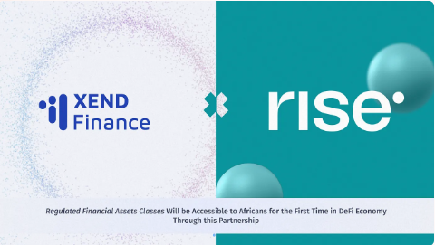
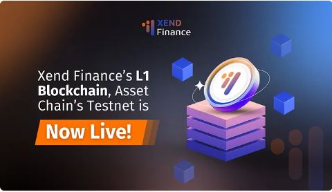
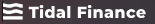
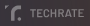
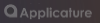
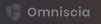
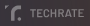
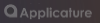
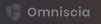

Revolutionizing Finance with Cryptocurrency-backed Real Wor ld Assets (RWA)
New Era of Financial Freedom: Explore the Fusion of Cryptocurrency and Real World Assets on Xend Finance
Award-Winning Technology Featured On
Features
Every tool you need to optimize your savings and Investment potential
Discover our technology and the vision of Xend Finance(RWA).
Stage 1
RWA blockchain, Origin studio and Gor register
Products - RWA line
Local RWA Subchains
- Creating RWA subchains that directly correspond with the legal framewo rks of specific countries concerning assets and ownership
- Appointing country-specific IAC councils responsible for maintaining and developing these subchains
- Enabling legal causality, where events on country-specific DDPA blockchains are recognized as legal events within that country's legal framework
Xend Browser
- A dedicated web browsing solution akin to Google Chrome or Mozilla Firefox
- RWA Explorer: A tool for exploring sub-chains, asset profiles, and transactions
- RWA Domain Register: Enables the setup of asset domains as websites, utilizing the RWA blockchain as an equivalent to DNS for an independent internet.
- RWA Subnet creator: Enables creating own independent internet at the country, regional, or local level
NodeOS
- Integrated with the Xend Browser, designed to operate seamlessly in the background.
- Enables the transformation of any device, whether mobile or stationary, with an internet connection and hard drive,
- into a MicroNode. This contributes to the creation and maintenance of the RWA blockchain and supports RWA decentralized oracles.
Xend Hybridwallet
- Function as both traditional bank account and blockchain wallet at once
- Allows for auto conversion between fiat currencies and stablecoins to streamline transactions and asset management.
- Includes a built-in foreign exchange feature within the wallet, simplifying currency exchanges directly within the platform.
Products - Xend Solutions Line
Local RWA Subchains
- Creating RWA subchains that directly correspond with the legal framewo rks of specific countries concerning assets and ownership
- Appointing country-specific IAC councils responsible for maintaining and developing these subchains
- Enabling legal causality, where events on country-specific DDPA blockchains are recognized as legal events within that country's legal framework
Xend Browser
- A dedicated web browsing solution akin to Google Chrome or Mozilla Firefox
- RWA Explorer: A tool for exploring sub-chains, asset profiles, and transactions
- RWA Domain Register: Enables the setup of asset domains as websites, utilizing the RWA blockchain as an equivalent to DNS for an independent internet.
- RWA Subnet creator: Enables creating own independent internet at the country, regional, or local level
NodeOS
- Integrated with the Xend Browser, designed to operate seamlessly in the background.
- Enables the transformation of any device, whether mobile or stationary, with an internet connection and hard drive,
- into a MicroNode. This contributes to the creation and maintenance of the RWA blockchain and supports RWA decentralized oracles.
Xend Hybridwallet
- Function as both traditional bank account and blockchain wallet at once
- Allows for auto conversion between fiat currencies and stablecoins to streamline transactions and asset management.
- Includes a built-in foreign exchange feature within the wallet, simplifying currency exchanges directly within the platform.
organizational framework
Local RWA Subchains
- Creating RWA subchains that directly correspond with the legal framewo rks of specific countries concerning assets and ownership
- Appointing country-specific IAC councils responsible for maintaining and developing these subchains
- Enabling legal causality, where events on country-specific DDPA blockchains are recognized as legal events within that country's legal framework
Xend Browser
- A dedicated web browsing solution akin to Google Chrome or Mozilla Firefox
- RWA Explorer: A tool for exploring sub-chains, asset profiles, and transactions
- RWA Domain Register: Enables the setup of asset domains as websites, utilizing the RWA blockchain as an equivalent to DNS for an independent internet.
- RWA Subnet creator: Enables creating own independent internet at the country, regional, or local level
NodeOS
- Integrated with the Xend Browser, designed to operate seamlessly in the background.
- Enables the transformation of any device, whether mobile or stationary, with an internet connection and hard drive,
- into a MicroNode. This contributes to the creation and maintenance of the RWA blockchain and supports RWA decentralized oracles.
Xend Hybridwallet
- Function as both traditional bank account and blockchain wallet at once
- Allows for auto conversion between fiat currencies and stablecoins to streamline transactions and asset management.
- Includes a built-in foreign exchange feature within the wallet, simplifying currency exchanges directly within the platform.
Stage 2
World Wide Blockchain
Products - RWA line
Products - Xend Solutions Line
organizational framework
Our Top Investors
News/Announcements
Latest news from our blog and press releases
Press Coverage
MEDIA/ December 22, 2023 /Medium
Landmark Partnership Unlocks Access To Regulated Financial Assets For Africans In The DeFi Economy
Xend Finance Partners With Risevest To Bridge TradFi (Traditional Finance) And DeFi (Decentralised Finance), Allowing Stablecoin Transactions In TradFi, And Access To RWA (Real-World Assets) In DeFi.
Read more
MEDIA/ August 3, 2022 /Disrupt Africa
Nigeria's Xend Finance adds to product suite of its global crypto bank
Read more
Blog posts
MEDIA/ June 20, 2024 /Medium
Xend Finance's L1 Blockchain, Asset Chain's Testnet is Now Live!
Xend Finance has introduced the Asset Chain Testnet, which is the native blockchain for their Real-World Asset OAE. This Testnet allows for easy and smooth tokenization, verification, and management of real-world assets on-chain, providing diverse investment opportunities. The Xend community can participate in tasks and airdrops to experience these features firsthand
Read more
MEDIA/ December 15, 2023 /Medium
Xend Finance Partners With GT Protocol To Power XEND-AI And Assist Our Users Make Better Investment
Read more
Join Our Communities
Be the first to learn about company updates, product launches, and giveaways.
Get Started

Get our Monthtly Newsletters
Insured for up to $300 Million by
Audited by
 





Technology
- Business
- Developer
- Xend mobile
- valute
- staking
- SDK
- Raw Token
- x-wallet
- XendBridge
- SweetWallet
- Native Raw Bridge
- Raw Migration Tool
Product
- Whitepaper
- Team
- Media
- FAQs
- Blog